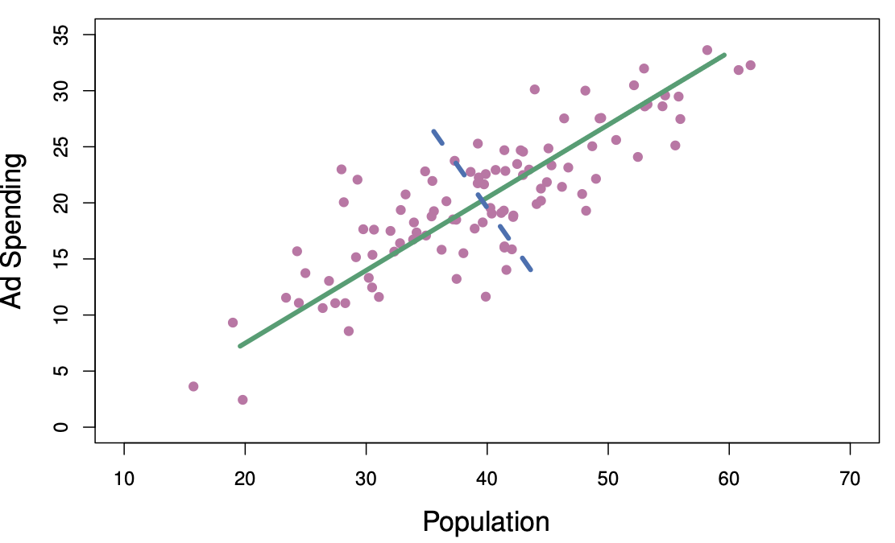

PCA and Matrix Completion
Introduction to Statistical Learning - PISE
This unit will cover the following topics:
- Principal Components Analysis
- Matrix Completion
Unsupervised Learning
- Most of this course focuses on supervised learning methods such as regression
- In supervised learning:
- We observe features X_1, X_2, \ldots, X_p and a response variable Y
- Goal: predict Y using X_1, X_2, \ldots, X_p
- We observe features X_1, X_2, \ldots, X_p and a response variable Y
- In unsupervised learning:
- We observe only features X_1, X_2, \ldots, X_p
- No response variable Y is available
- Goal is not prediction, but discovering structure in the data
- We observe only features X_1, X_2, \ldots, X_p
Principal Components Analysis
PCA produces a low-dimensional representation of a dataset
It finds a sequence of linear combinations of the variables that have maximal variance and are mutually uncorrelated
Apart from producing derived variables for use in supervised learning problems, PCA also serves as a tool for data visualization
Principal Components Analysis: details
The first principal component of a set of features X_1, X_2, ..., X_p is the normalized linear combination of the features
Z_1 = \phi_{11}X_1 + \phi_{21}X_2 + \cdots + \phi_{p1}X_p that has the largest variance. By normalized, we mean that: \sum_{j=1}^{p} \phi_{j1}^2 = 1We refer to the elements \phi_{11}, ..., \phi_{p1} as the loadings of the first principal component. Together, the loadings make up the principal component loading vector: \phi_1 = (\phi_{11} \ \phi_{21} \ \cdots \ \phi_{p1})^T
We constrain the loadings so that their sum of squares is equal to one. Otherwise, arbitrarily large values would lead to arbitrarily large variance
Figure 6.14 ISL

The population size (pop) and ad spending (ad) for 100 different cities are shown as purple circles. The green solid line indicates the first principal component direction, and the blue dashed line indicates the second principal component direction.
Computation of Principal Components
Suppose we have an n \times p data set \mathbf{X}. Since we are only interested in variance, we assume that each of the variables in \mathbf{X} has been centered to have mean zero (that is, the column means of \mathbf{X} are zero)
We then look for the linear combination of the sample feature values of the form
z_{i1} = \phi_{11}x_{i1} + \phi_{21}x_{i2} + \cdots + \phi_{p1}x_{ip} for i = 1, ..., n that has largest sample variance, subject to the constraint that \sum_{j=1}^{p} \phi_{j1}^2 = 1Since each of the x_{ij} has mean zero, then so does z_{i1} (for any values of \phi_{j1}). Hence the sample variance of the z_{i1} can be written as
\frac{1}{n} \sum_{i=1}^{n} z_{i1}^2
Required readings from the textbook and course materials
- Chapter 3: Linear Regression
- 3.1 Simple Linear Regression
- 3.1.1 Estimating the Coefficients
- 3.1.3 Assessing the Accuracy of the Model
- 3.2 Multiple Linear Regression
- 3.2.1 Estimating the Regression Coefficients
- 3.3 Other Considerations in the Regression Model
- 3.3.1 Qualitative Predictors
- 3.1 Simple Linear Regression
- Chapter 6: Linear Model Selection and Regularization
- 6.1 Subset Selection
- 6.1.1 Best Subset Selection
- 6.1.2 Stepwise Selection
- 6.1.3 Choosing the Optimal Model
- 6.1 Subset Selection
Required readings from the textbook and course materials
Video SL 3.1 Simple Linear Regression - 13:02
Video SL 3.3 Multiple Linear Regression - 15:38
Video SL 3.4 Some Important Questions - 14:52
Video SL 3.5 Extensions of the Linear Model - 14:17
Video SL 6.1 Introduction and Best Subset Selection - 13:45
Video SL 6.3 Backward Stepwise Selection - 5:27